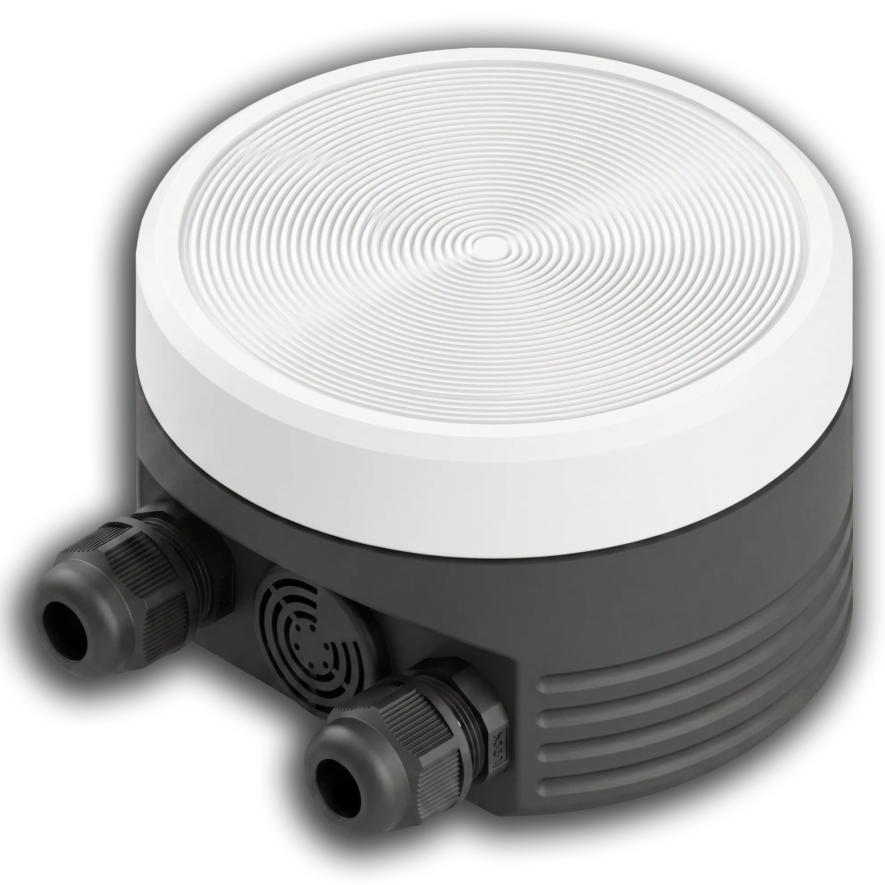

Safety Accessories
UBSVN-LM Safety Interlock & Audio-Visual Alarm
Safety interlock and audio-visual alarm for HV laboratories.
The UBSVN-LM is a critical safety device designed for high-voltage testing laboratories. It provides a clear audio-visual warning when high voltage is active and physically blocks power to the HV source if the laboratory door is opened, protecting personnel from accidental exposure.
About the product
The UBSVN-LM is a critical safety device designed for high-voltage testing laboratories. It provides a clear audio-visual warning when high voltage is active and physically blocks power to the HV source if the laboratory door is opened, protecting personnel from accidental exposure.
The device is compatible with SKAT-70M, SKAT-70C, SKAT-70C/100C, SKAT-SVS series, and other HV test equipment with a normally open dry contact interlock circuit. Installation is straightforward, with clear connection diagrams provided in the user manual.
UBSVN-LM: Product Overview
A general overview of the instrument's key features and capabilities.
Product documents
Related products


Technical specifications
Note: Specifications are subject to change without notice. For custom ranges and configurations, please contact our sales team.
FAQ
Interpreting test results
For detailed guidance on installation and troubleshooting, refer to your equipment's user manual.
Troubleshooting & Software updates
- Ensure proper wiring: according to the connection diagram. Verify the limit switch is correctly installed on the door. Check the power supply.
- No signal: Check the limit switch connection and power supply.
- Interlock not triggering: Verify the wiring diagram.
Application and academic support
For detailed application notes, technical guides, and academic resources, please refer to the knowledge base on our website or contact our technical support team.
Contact Support